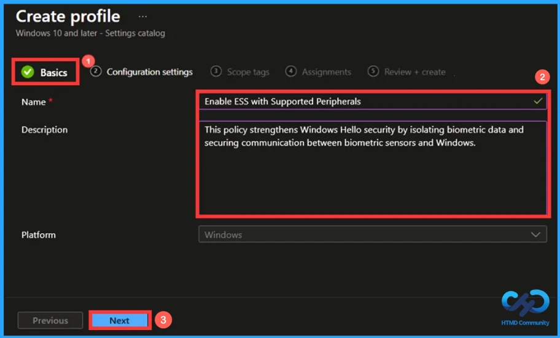
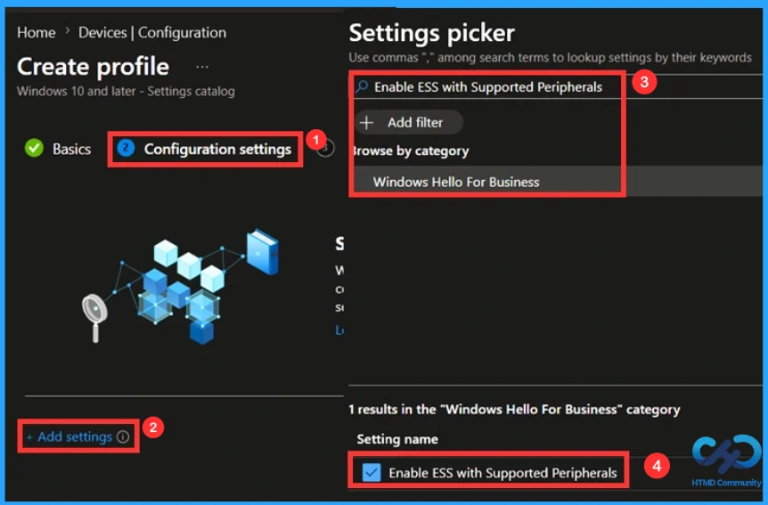
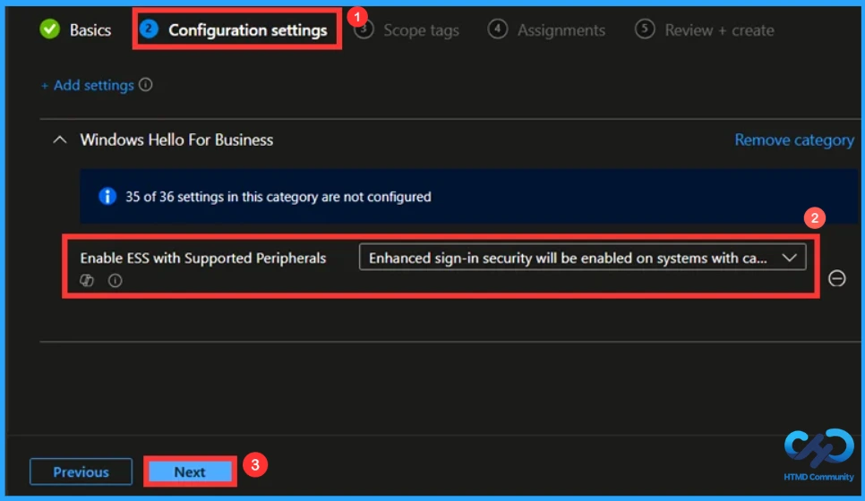
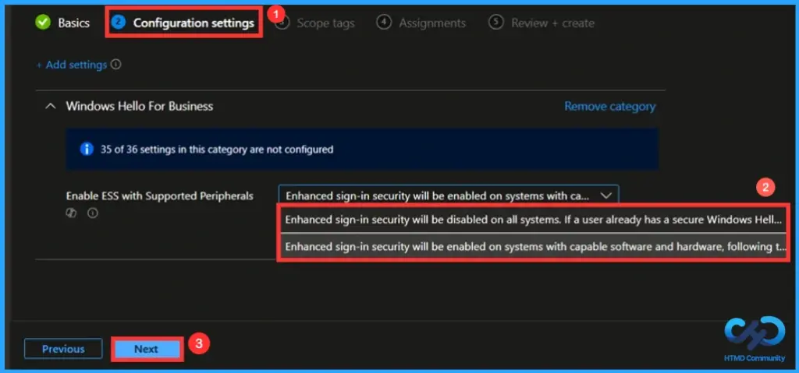
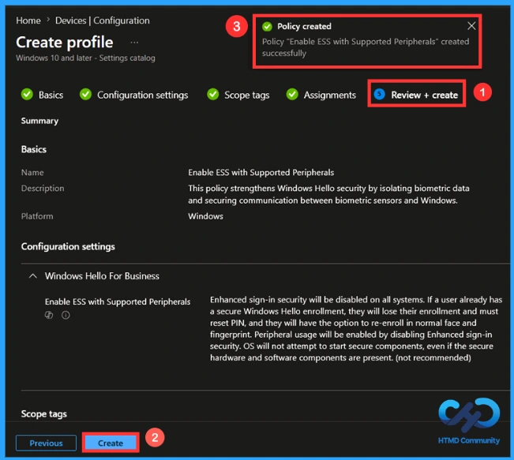
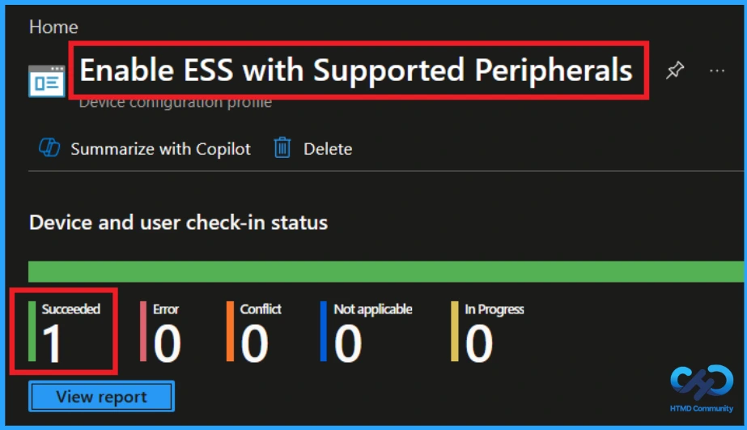
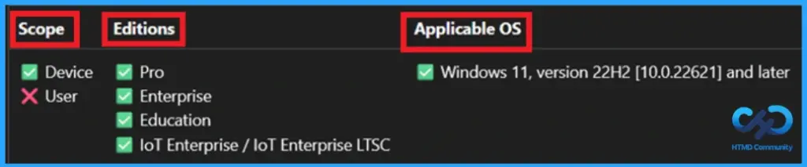
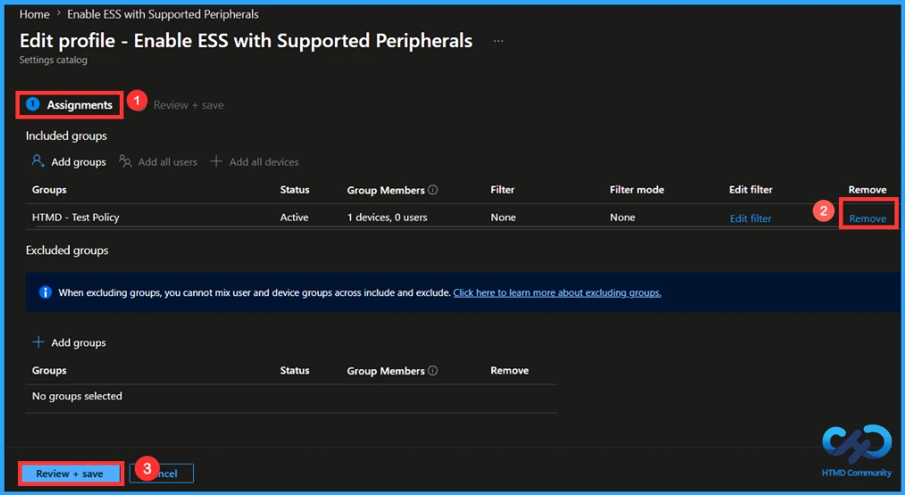
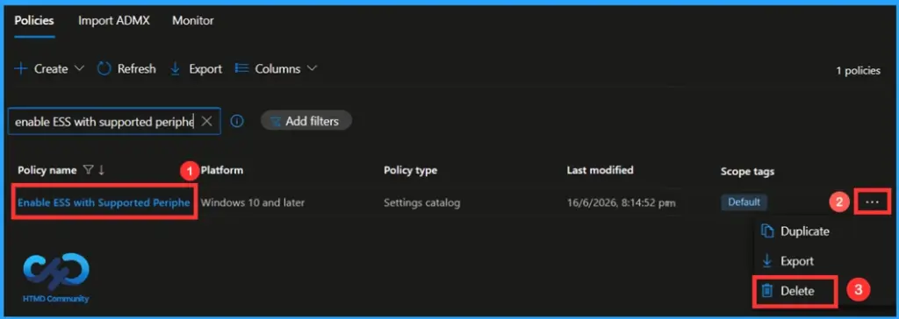

Key Takeaways
- Manages Enhanced Sign-in Security (ESS) settings.
- Controls Windows Hello biometric authentication.
- Helps protect fingerprint and facial recognition data.
- Improves device compatibility when disabled.
- Balances security and usability across devices.
Hey, let’s learn about Configure Windows Enhanced Sign-in Security ESS Policy in Microsoft Intune to Protect Windows Hello. Enhanced Sign-in Security (ESS) isolates both biometric template data and matching operations to trusted hardware or specified memory regions, meaning the rest of the operating system can’t access or tamper with them. Basically, this policy controls whether Windows Hello face recognition and fingerprint authentication use ESS-protected hardware and secure memory regions.
Table of Contents
What are the Advantages of this Policy?
This policy configures the security level of Windows Hello biometric authentication.
It helps organisations balance enhanced security requirements with device compatibility.
1. Improves compatibility with a wider range of devices.
2. Allows non-ESS biometric hardware to function normally.
3. Simplifies deployment in mixed hardware environments.
Configure Windows Enhanced Sign-in Security ESS Policy in Microsoft Intune to Protect Windows Hello
This policy enables Enhanced Sign-in Security (ESS) for supported biometric devices used with Windows Hello for Business.
How to Create a Policy
To create a policy, the first step that you must do is to sign in to the Microsoft Intune Admin Centre. After clicking on the Device on the left side of the screen and then select Configuration from list of options and then click Create down arrow and select New Policy.

Profile Creation in a Policy
When you click on the new policy, a box will appear in which you can specify the platform and profile type. From that, choose the Platform as Windows 10 and later and Profile Type as settings catalog. Then click on the Create button.

Naming the Policy
In the Basics Tab, provide a clear and meaningful name for this policy. Since naming the policy is mandatory, you should not skip this step. After giving the policy an appropriate name, you can give the policy a description if needed. This is not an important step. Click Next to continue.

Configuration Tab in this Policy
From this tab, you can select the policy that you need to create. To select the policy first click Add Settings and choose the policy from the list of policies. Here, I browsed the policy name and clicked on the category. After this, enable the settings name, then the policy that you choosed will appear on the tab.

Default settings of the policy
By default, ESS will be enabled on systems with capable software and hardware when the user’s first biometric enrollment is created using an ESS biometric device, following the existing default behavior in Windows. Authentication operations of any non-ESS biometric device will be blocked and not available for Windows Hello.

Disabling the policy
When disabled, ESS will be disabled on systems with capable software and hardware. Authentication operations of non-ESS peripheral Windows Hello capable devices will be allowed, subject to current feature limitations.

Scope Tag to Control Visibility
Scope Tag is not a mandatory step, it lets you control the visibility that means using this you can specify which admin can see and manage the policy. Since this is not mandatory, I would like to skip this step so click on Next.

Assignment Tab to Add Group
The Assignment Tab is used to add a group. In this tab, you can either include or exclude a group. In the include group option, the policy will be applied to the selected group. In the exclude group option, the members of the selected group won’t receive the policy. Here I added a group using include group and selected HTMD – Test Policy. Then click on Next to continue.

Finalising the Policy
In the Review + Create Tab you can summarise the content that you have entered before. This tab let you review eview each tab to avoid misconfiguration or policy failure. You can make changes by clicking the previous option and then click Create to finish, so a notification confirms that your policy has been created successfully.

Monitoring the Status of the Policy
You can check the policy’s status in the intune portal itself. since it takes 8 hours for a policy to be created. By using company portal, a manual sync option, you can easily do this step. Then check the status again. Navigate to Devices > Configuration. Click on the particular policy and check whether the succeeded value has become one.

Client-Side Verification
To confirm if a policy has been applied, use the Event Viewer on the client device. Go to Applications and Services Logs > Microsoft >Windows >Device Management > Enterprise Diagnostic Provider > Admin. From the list of policies, use the Filter Current Log option and search for Intune event
Configuration Service Provider (CSP)
The Policy Configuration Service Provider (CSP) is a feature used by organisations to manage and control settings on Windows 10 and 11 devices. It explains what each policy does, what settings or values can be used, and how it connects to older Group Policy settings (Group Policy Mapping details).
Description framework properties:
| Property name | Property value |
|---|---|
| Format | int |
| Access Type | Add, Delete, Get, Replace |
| Default Value | 1 |
Allowed values:
- 0 – ESS will be disabled on systems with capable software and hardware. Authentication operations of non-ESS peripheral Windows Hello capable devices will be allowed, subject to current feature limitations.
- 1 (Default) – ESS will be enabled on systems with capable software and hardware when the user’s first biometric enrollment is created using an ESS biometric device, following the existing default behavior in Windows. Authentication operations of any non-ESS biometric device will be blocked and not available for Windows Hello.
Group policy mapping:
| Name | Value |
|---|---|
| Name | Enable ESS with Supported Peripherals |
| Path | Passport > AT > WindowsComponents > MSPassportForWorkCategory |

How to Remove an Assigned Group
If you need to remove a group from a policy assignment for security updates. Open the policy from the configuration tab and click on the edit button. Then, click on the Remove button. Click Review + Save after making the changes.
For detailed information, you can refer to our previous post – Learn How to Delete or Remove App Assignment from Intune using by Step-by-Step Guide.

How to Delete this Policy
To delete this policy, go to the Devices>Configuration and then search for the policy using its name. Then your policy will appear on the screen. Click on the 3-dot menu and select the Delete option.
For more information, you can refer to our previous post – How to Delete Allow Clipboard History Policy in Intune Step by Step Guide.

Need Further Assistance or Have Technical Questions?
Join the LinkedIn Page and Telegram group to get the latest step-by-step guides and news updates. Join our Meetup Page to participate in User group meetings. Also, Join the WhatsApp Community and WhatsApp Channel to get the latest news on Microsoft Technologies. We are there on Reddit as well.
Author
Anoop C Nair has been Microsoft MVP from 2015 onwards for 10 consecutive years! He is a Workplace Solution Architect with more than 22+ years of experience in Workplace technologies. He is also a Blogger, Speaker, and Local User Group Community leader. His primary focus is on Device Management technologies like SCCM and Intune. He writes about technologies like Intune, SCCM, Windows, Cloud PC, Windows, Entra, Microsoft Security, Career, etc.